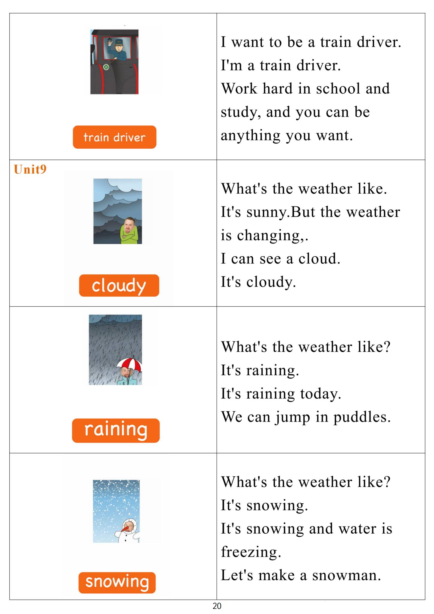

Day 19
Unit 6 · story
教材重点
网盘未提供逐日打卡原图；本级教材文件为“5.第五级单词卡.pdf”，以下重点结合单词卡与台词本整理，原文请看 Part 3。
Unit 6 · story · 7–8岁
like · look · say · hello
Hello, hello, my name's Steve.
台词本为机器转写，可能存在识别误差；不等同于视频逐字原声。
详细内容
Part 1 核心词汇
必须掌握 · 4 个查看橙色每日打卡 Day 19 原图

Part 2 跟读句型与句型拓展
左侧保留台词本原句，右侧为替换练习；拓展内容不是视频逐字台词。
Hello, hello, my name's Steve.
Hello, hello, it's time to play. It's time to play in English.
Monday, tuesday, wednesday.
Thursday, friday, saturday and Sunday, let's have that.
There that there, and that, oh yeah, there.
Part 3 台词本全文
来源：第5级台词本 · 019.Wow!Orange - Unit 6 story_6_1b.pdf。以下保留网盘 PDF 的机器转写文本，仅清理了文件路径页眉和空行。
Hello, hello, my name's Steve.
Hello, hello, it's time to play. It's time to play in English.
Monday, tuesday, wednesday.
Thursday, friday, saturday and Sunday, let's have that.
There that there, and that, oh yeah, there.
Great, finished, oh, hey, hi, look, this is a menu for my new restaurant, let me show you wait there, wait,
hold on, hold on.
Welcome to my new restaurant.
Look at the menu, oh, it's delicious. Hey, this is what's for breakfast on Monday?
Lunch on Monday and dinner on Monday.
What's Monday This is Monday, it's the first day of the week.
Monday starts with the letter M. That sounds like Mah for Mamma.
Monday, yes, say with me, monday, monday, monday, so hey, what's the second day of the week?
Yeah, tuesday.
Tuesday starts with the letter T, that sounds like TA for ta, ta, tata.
Tuesday, yeah, say with me, tuesday, tuesday, tuesday, well, done, hey, what's for breakfast on
Tuesday?
Oh, look, there's tea and cake for breakfast on Tuesday, delicious.
So that's Monday and Tuesday. What's next? Yeah, wednesday, wednesday, start with the letter.
W, that sounds like W-W-W-W-W Wednesday, say it with me, wednesday, wednesday, wednesday,
wednesday, well, done.
Oh, look, hey, there are hamburgers for lunch on Wednesday.
Do you like hamburgers I do Let's play for help. Yeah.
Go, I go away home, maggie,
How Maggie, look at my window? Sorry?
That's great. You.
Fix the window, but that's the easy part. Look at my menu, no, maggie, no magic.
I want you to put the menu back while I go and have a cup of tea.
I know, where is your favorite.
Delicious. I like.
OK, let's see how Maggie's doing. Come on, maggie.
Maggie, have you finished Have you finished time Oh yeah, nearly, you just need to put the days of the
/
-
/5/019.Wow!Orange - Unit 6 story_6_1b.txt[2022/3/29
星期二
6:51:50]
week here, yeah, but.
I don't know the days of the week, okay, maggie, I'll help you, uh, well, that's Monday, that's Tuesday,
and that's Wednesday, okay?
We know Monday, tuesday, wednesday, don't we?
What's the next day, though, yeah, it's Thursday, thursday starts with T and H.
And together they sound like, let's practice that, put your finger in front of your lips and say,
Is your finger wet? Yeah, yeah, then you're doing it right. So say with me.
Thursday, thursday, thursday, well done.
That's right, maggie, that's Thursday, put it up, so hey, there's Monday, tuesday, wednesday, thursday,
then.
Friday, yeah, and Friday starts with the letter F. That sounds like.
For Friday, friday, friday, friday, it's my favorite day. Yeah?
Oh, well done, maggie, you've got Friday super.
Okay. So the last two are.
Saturday and Sunday, they both start.
With the letter S, that sounds like, so say with me, saturday and Sunday, saturday and Sunday.
Saturday and Sunday, yeah, saturday and Sunday make.
The weekend.
Well done, maggie, we've finished, but how can I remember the days of come, okay, hey,
Let's try to help Maggie remember the days of the week. Hey, listen to this.
Monday, tuesday, wednesday.
Thursday, friday, saturday and Sunday is one week Monday Tuesday Wednesday.
Thursday, friday, saturday and Sunday is one week. Great.
Oh, what's that?
Oh, ice cream for dinner on Thursday and spaghetti for breakfast on Friday.
Oh no, thank you, oh, maggie, it's not done properly at all, OK?
To work. Yeah. Bye bye.